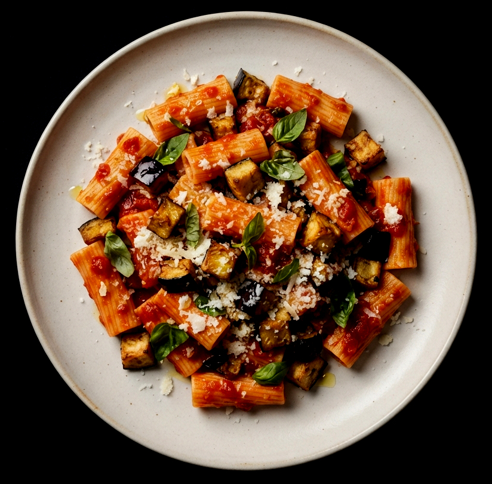

That is, assuming you’re going the homemade route. You really won’t believe how quickly my marinara comes together!
We’re going to follow Ottolenghi’s lead here and use a vegetable peeler to shave off strips of eggplant peel to make it look rather zebra-like. This way, you still get some of the nice texture of the eggplant skin, but you don’t end up with distracting long strips of it in your finished dish (the eggplant tends to fall apart in the sauce, in a good way). Then, we’ll slice the eggplant into rounds, brush them with oil, and roast them until deeply golden.
Salting the water infuses your pasta with more flavor. Try to remember to reserve some of the pasta cooking water before draining it—the starch in the water helps unite the sauce with the pasta. I typically scoop some into a Pyrex glass measuring cup just before draining. (If you forget, as I often do, no worries.)
This is when we add the fresh basil, most of the cheese (reserve some for garnish), and some spices. Add salt to taste, and your meal is ready to serve. Buon appetito.